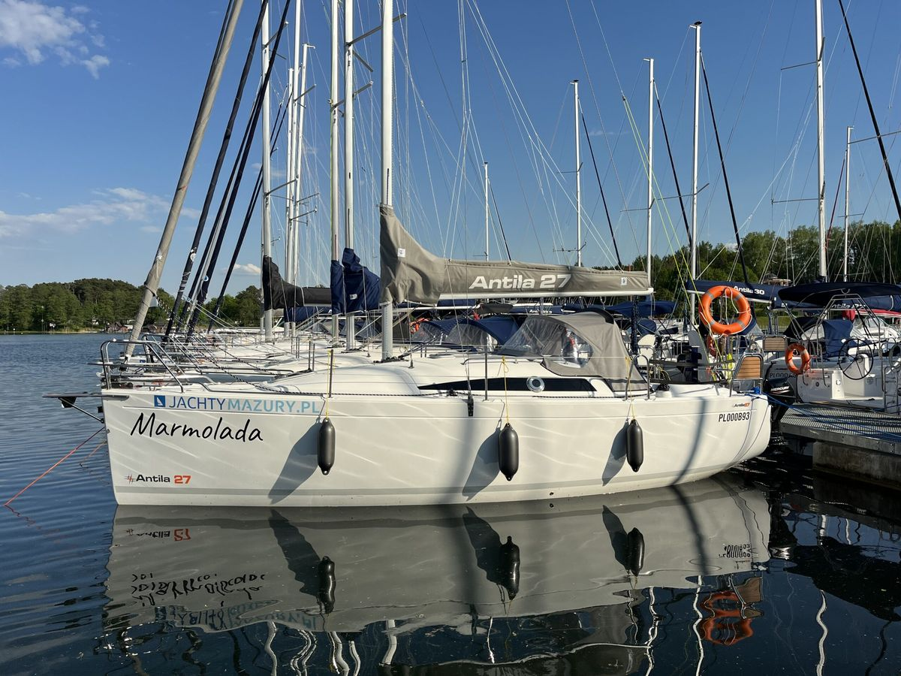

Antila 27„Hiuma”
- Miejsca
- 8
- Kabiny
- 3
- Zanurzenie
- 0,39 / 1,85 m
- Rok produkcji
- 2022
Długość całkowita8,85 m
Cena od430 zł / doba

Jacht żaglowy
Antila 27 · Marmolada
Jacht Antila 27 „Marmolada” to turystyczny jacht żaglowy z bazy w Giżycku, dostępny w czarterze jachtów żaglowych na Mazurach. Komfortowy i bezpieczny jacht przeznaczony zarówno dla zapalonych żeglarzy, jak i rodzin z dziećmi szukających funkcjonalnej przestrzeni na kilkudniowy rejs. Dynamiczna sylwetka jachtu i przemyślany układ wnętrza sprawiają, że Antila 27 wyróżnia się na tle innych jachtów na Mazurach dostępnych w tym segmencie.
Wnętrze jachtu zaprojektowano z myślą o codziennym użytkowaniu na wodzie. Pod pokładem znajdują się trzy zamykane kabiny, przestronna mesa i w pełni wyposażony kambuz z kuchenką gazową. Układ pozwala kilku osobom jednocześnie gotować, odpoczywać i przebierać się – bez konieczności reorganizacji przestrzeni między kolejnymi czynnościami.
Schowki i meble rozmieszczono pod kątem praktyki wielodniowego rejsu. Prowiant, osprzęt i bagaż osobisty mieszczą się w wyznaczonych miejscach i są dostępne bez przeszukiwania całego jachtu. Wnętrze jachtu doświetlone jest naturalnym światłem i wentylowane, co ma znaczenie przy cieplejszej pogodzie na mazurskim szlaku żeglarskim.
Antila 27 w wersji czarterowej oferuje miejsca noclegowe dla ośmiu osób w trzech zamykanych kabinach i mesie. Kabina dziobowa ma komfortową, dwuosobową koję. Pozostałe koje zlokalizowane są w kabinach rufowych i mesie, co daje elastyczność przy planowaniu składu załogi. Zamykane kabiny to szczegół, który docenią mieszane grupy i rodziny z dziećmi. Możliwość wydzielenia prywatnej przestrzeni sprawia, że jacht sprawdza się przez cały czas trwania dłuższego rejsu – bez kompromisów w kwestii komfortu noclegowego.
Jeśli planujesz rejs z liczniejszą grupą lub szukasz większej jednostki, sprawdź Antilę 28.2 lub Antilę 30. Dla par i mniejszych załóg dostępna jest Antila 24.4.
Antila 27 charakteryzuje się dobrą statecznością poprzeczną i przewidywalnym zachowaniem na wodzie. Kształt kadłuba sprzyja osiąganiu dobrych prędkości przy zachowaniu manewrowości i lekkości prowadzenia – zarówno na otwartych jeziorach, jak i przy wchodzeniu do portów i przystani w Giżycku oraz w innych portach mazurskiego szlaku.
Ożaglowanie obejmuje grot na pełzaczach oraz rolfok na sztywnym sztagu. To rozwiązania techniczne, które upraszczają obsługę żagli przez małą załogę bez konieczności angażowania wszystkich na pokładzie przy każdej zmianie kursu. Lazy jack zainstalowany na grocie ułatwia zbieranie żagla przy postoju i wejściu do portu.
Napęd pomocniczy stanowi silnik Mercury 9,9 KM z rozruchem elektrycznym, zasilany z akumulatora rozruchowego. Szybki i niezawodny start silnika to udogodnienie doceniane szczególnie podczas manewrów w portach Giżycka i okolic. Jacht wydawany jest z pełnym zbiornikiem paliwa.
Szukasz jednostki motorowej zamiast żaglowej? Sprawdź dostępne jachty motorowe na Mazurach.
Nie posiadasz patentu żeglarskiego? Część jednostek z naszej floty dostępna jest w ramach czarteru bez patentu.
Cena za dobę obowiązuje przy czarterze minimum tygodniowym. Przy krótszych terminach cena ustalana jest indywidualnie.
430 zł / doba
Kalendarz dostępnościTu wyświetli się kalendarz tej jednostki z systemu rezerwacji.
Wydanie jachtu 16:00 – 20:00 · zdanie 8:00 – 10:00
Dotyczy: Antila 27 „Marmolada”. Odpowiemy telefonicznie albo e-mailem.
Sprawdź dostępność i zaplanuj swój rejs już dziś.